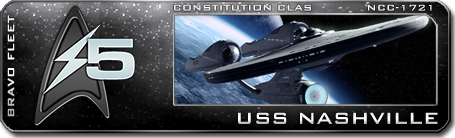

The Constitution
Welcome to the USS Constitution, a Star Trek Play-by-Forum simulation set in Bravo Fleet's very own NuTrek division, Task Force 5. Led by Commander Caden Halsey, the Constitution serves as a collaborative writing project, exploring the stars and distant civilizations through the minds of our talented crew of writers.
The Constitution is always looking to expand our team. If you'd like to join us on our trek through the stars, have a look at the crew manifest to see if there's a position you would be interested in writing!
The Nashville
If there doesn't happen to be a position available that interests you at this time, have a look at our sister ship, the USS Nashville ! The Nashville is led by our very own Haruka Hannah, and steps forward as another leader of the Bravo Fleet writing experience!
